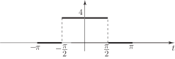

4 Examples of Fourier series
We shall obtain the Fourier series of the “half-rectified” square wave shown in Figure 10.
Figure 10
We have
The calculation of the Fourier coefficients is merely straightforward integration using the results already obtained:
in general. Hence, for our square wave
But so the constant term is .
(The square wave takes on values 1 and 0 over equal length intervals of so is clearly the mean value.)
Similarly
Some care is needed now!
But
However,
i.e.
Hence the required Fourier series is
Note that the Fourier series for this particular form of the square wave contains a constant term and odd harmonic sine terms. We already know why the constant term arises (because of the non-zero mean value of the functions) and will explain later why the presence of any odd harmonic sine terms could have been predicted without integration.
The Fourier series we have found can be written in summation notation in various ways:
or, since is odd, we may write and write the Fourier series as
Task!
Obtain the Fourier series of the square wave one period of which is shown:

We have, since the function is non-zero only for
is the constant term as we would expect. Also
It follows from a knowledge of the sine function that
Also
Hence, the required Fourier series is
which, like the previous square wave, contains a constant term and odd harmonics, but in this case odd harmonic cosine terms rather than sine.
You may recall that this particular square wave was used earlier and we have already sketched the form of the Fourier series for 2, 3, 4 and 5 terms in Figure 8.
Clearly, in finding the Fourier series of square waves, the integration is particularly simple because takes on piecewise constant values. For other functions, such as saw-tooth waves this will not be the case. Before we tackle such functions however we shall generalise our formulae for the Fourier coefficients to the case of a periodic function of arbitrary period, rather than confining ourselves to period